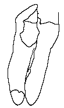
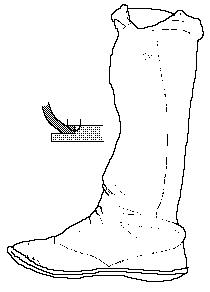

| Warrior's Shoe (c.3500 BCE) | |
 |
Hauslabjoch (Iceman) Shoe (c.3200 BCE) |
| Buinerveen Shoes (c.3000 BCE) | |
 |
Tarim Shoe (c.2000 BCE) |
 |
Tarim Boot (c.1000 BCE) |
 |
Tarim Shoe (c.200 BCE) |
 |
Salt Man's Boot (c.200 CE) |